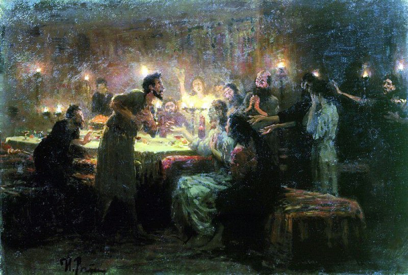

Последний день Помпеи - Карл Брюллов
Описание картины "Последний день Помпеи - Карл Брюллов":
Сюжетом для полотна послужило разрушение древнеримского города Помпеи при извержении вулкана Везувий в 79 году нашей эры. Источником для воплощения сюжета послужили письма древнеримского историка Плиния Младшего — очевидца катастрофы — Тациту и натурное изучение развалин Помпей, археологическое раскрытие которых началось в середине XVIII века и продолжается до сегодняшнего дня. Место действия картины Брюллова — Дорога Гробниц (Strada dei Sepolcri), помпеянский некрополь, километровая перспектива от Геркуланских ворот до виллы Диомеда в направлении виллы Мистерий. Раскопки здесь начались в 1763 году и продолжались до 1838. Впервые картина была показана на выставке в галерее Брера в Милане (1833), в марте 1834 выставлялась в Лувре (в экспозиции ежегодного Салона), где Брюллов получил первую золотую медаль; в 1834 экспонировалась в Эрмитаже, с 1835 — на чрезвычайной выставке в Академии художеств. За эту картину художник получил бриллиантовый перстень, был удостоен ордена св. Анны 3-й степени и избран профессором 2-й степени Академии художеств. Среди персонажей, на ступенях храма, художник изобразил себя. В поисках сюжета для крупного произведения художник руководствовался стремлением показать некое реальное событие прошлого на точной документальной основе. Во время пребывания в Италии художнику довелось побывать на археологических раскопках, открывших миру древние города Помпеи и Геркуланум, погребенные при извержении Везувия 24 августа 79 года. Созданию картины предшествовало пристальное изучение исторических источников (в том числе писем очевидца, историка Плиния Младшего) и памятников древности.
Больше информации о картине...